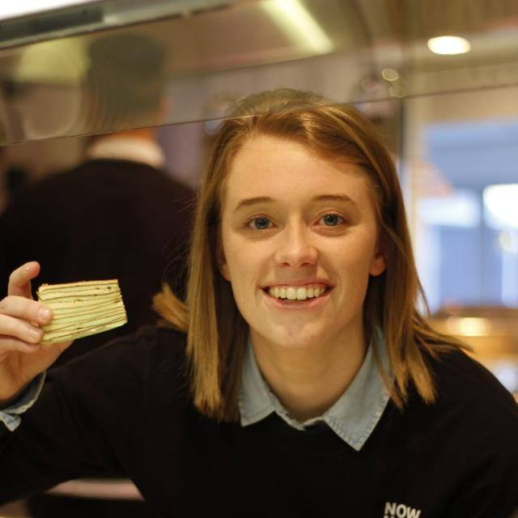
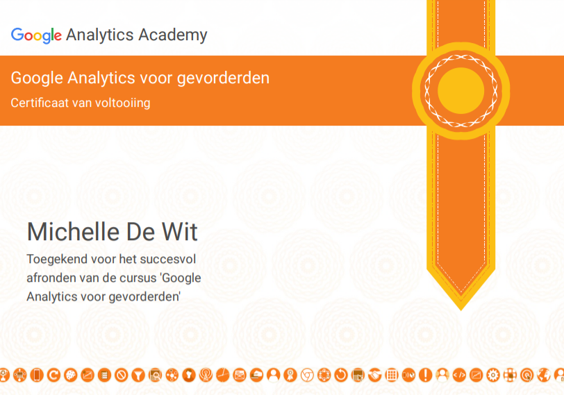

De workshops
Voorafgaand aan de minor had ik al een idee waarin ik meer wilde leren of
kennis mee wilde maken, dit waren Google Analytics en SEO. Door de gevolgde workshop werd mijn interesse in
deze gebieden steeds meer bevestigd waardoor ik deze ook als leerdoel heb opgesteld.
Tijdens de eerste vijf weken heb ik ook kennis gemaakt met de andere facetten van het vakgebied van digitale
marketing. Ik merkte eigenlijk door deze workshops al snel welke onderdelen ik leuk vond en welke minder. Zo
had ik bijvoorbeeld wat minder met de storytelling en gebruikersonderzoeken workshops aangezien ik dit al
vaker heb behandeld op mijn eigen opleiding. De big data gerichte workshops spraken mij ook wat minder aan
omdat ik ook de minder technische onderdelen een keer wilde leren.
Tijdens de workshops merkte ik dat ik vooral social media meer wilde ontdekken, en dan niet alleen de
organische posts maar ook vooral de advertentiekant. Ik had namelijk geen idee hoe je advertentie opzet en
hoe je bijvoorbeeld een budget gebruikt.
Wat vond ik erg leuk
In het algemeen vond ik het semester erg leuk. Je krijgt erg veel
vrijheid om echt de dingen uit te proberen die je zelf leuk vind. Hierdoor heb ik opdrachten uitgevoerd die
ik niet alleen leuk vond maar ook waar ik denk dat ik later in mijn carrière profijt van kan hebben. Ik
merkte in vorige semesters van de ICT opleiding dat er vaste onderdelen in een oplevering moesten zitten wat
ik niet wilde leren en daardoor het gevoel had dat het niet van toepassing was in mijn leerproces. Voor mijn
idee heb ik in deze minor daarom voor ook later in mijn carrière veel kennis kunnen vergaren.
Wat vond ik minder leuk
In de projectfase met de opdrachtgevers merkte ik dat ik het best wel
veel vond. Niet eens perse met de opdrachten maar vooral met het onderhouden van contact met de
opdrachtgevers. Mailcontact, wekelijkse meetings en presentaties hierdoor kon ik voor mijn gevoel minder
aandacht besteden aan een desbetreffende opdracht. Ik snap de meerwaarde van een opdrachtgever en dat het
goed is om dit te oefenen maar door de hoeveelheid opdrachtgevers voelde het soms meer alsof het proces
vertraagd werd.
Minor voor de toekomst
Ik denk dat ik bepaalde onderdelen van de minor zeker kan meenemen in
mijn werkveld als ICT’er nadat ik ben afgestudeerd. Mijn opgedane kennis over SEO en Google Analytics kan ik
gaan toepassen in mijn huidige werk als webdeveloper. Ik kan nu klanten veel meer adviseren op het gebied
van SEO en ook zelf SEO trucjes gaan toepassen. Op het gebied van Google Analytics kan achteraf na een
oplevering van een website ook nog van toegevoegde waarde zijn door middel van het analyseren van de
websitepresentaties of het opstellen van doelen.
Naast de opgedane kennis zijn natuurlijk de “Google Analytics” en “Basisprincipes van online marketing”
certificaten die ik heb behaald nuttig om op mijn cv te zetten om zo te kunnen laten ziet dat ik van deze
onderdelen kennis heb.

Stage
Het leuke gevolg van de minor is ook dat ik marketing ga verwerken in de
stage voor mijn afstudeeropdracht. De opdracht gaat onder andere namelijk over marketing automation. In de
opdracht gaat het vooral over het toepassen van marketing in de technische tools, technieken en middelen die
het stagebedrijf gebruikt.